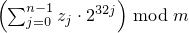
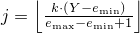
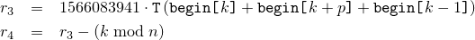
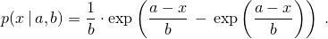
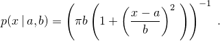
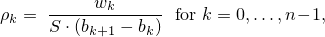

26 Numerics library [numerics]
26.5 Random number generation [rand]
This subclause defines a facility for generating (pseudo-)random numbers.
In addition to a few utilities, four categories of entities are described: uniform random number generators, random number engines, random number engine adaptors, and random number distributions. These categorizations are applicable to types that satisfy the corresponding requirements, to objects instantiated from such types, and to templates producing such types when instantiated. [ Note: These entities are specified in such a way as to permit the binding of any uniform random number generator object e as the argument to any random number distribution object d, thus producing a zero-argument function object such as given by bind(d,e). — end note ]
Each of the entities specified via this subclause has an associated arithmetic type ([basic.fundamental]) identified as result_type. With T as the result_type thus associated with such an entity, that entity is characterized:
as boolean or equivalently as boolean-valued, if T is bool;
otherwise as integral or equivalently as integer-valued, if numeric_limits<T>::is_integer is true;
otherwise as floating or equivalently as real-valued.
If integer-valued, an entity may optionally be further characterized as signed or unsigned, according to numeric_limits<T>::is_signed.
Unless otherwise specified, all descriptions of calculations in this subclause use mathematical real numbers.
Throughout this subclause, the operators bitand , bitor , and xor denote the respective conventional bitwise operations. Further:
the operator rshift denotes a bitwise right shift with zero-valued bits appearing in the high bits of the result, and
the operator lshiftw denotes a bitwise left shift with zero-valued bits appearing in the low bits of the result, and whose result is always taken modulo 2w.
26.5.1 Requirements [rand.req]
26.5.1.1 General requirements [rand.req.genl]
Throughout this subclause [rand], the effect of instantiating a template:
that has a template type parameter named Sseq is undefined unless the corresponding template argument is cv-unqualified and satisfies the requirements of seed sequence ([rand.req.seedseq]).
that has a template type parameter named URNG is undefined unless the corresponding template argument is cv-unqualified and satisfies the requirements of uniform random number generator ([rand.req.urng]).
that has a template type parameter named Engine is undefined unless the corresponding template argument is cv-unqualified and satisfies the requirements of random number engine ([rand.req.eng]).
that has a template type parameter named RealType is undefined unless the corresponding template argument is cv-unqualified and is one of float, double, or long double.
that has a template type parameter named IntType is undefined unless the corresponding template argument is cv-unqualified and is one of short, int, long, long long, unsigned short, unsigned int, unsigned long, or unsigned long long.
that has a template type parameter named UIntType is undefined unless the corresponding template argument is cv-unqualified and is one of unsigned short, unsigned int, unsigned long, or unsigned long long.
Throughout this subclause [rand], phrases of the form “x is an iterator of a specific kind” shall be interpreted as equivalent to the more formal requirement that “x is a value of a type satisfying the requirements of the specified iterator type.”
26.5.1.2 Seed sequence requirements [rand.req.seedseq]
A seed sequence is an object that consumes a sequence of integer-valued data and produces a requested number of unsigned integer values i, 0 ≤ i < 232 , based on the consumed data. [ Note: Such an object provides a mechanism to avoid replication of streams of random variates. This can be useful, for example, in applications requiring large numbers of random number engines. — end note ]
A class S satisfies the requirements of a seed sequence if the expressions shown in Table [tab:SeedSequence] are valid and have the indicated semantics, and if S also satisfies all other requirements of this section [rand.req.seedseq]. In that Table and throughout this section:
T is the type named by S's associated result_type;
q is a value of S and r is a possibly const value of S;
ib and ie are input iterators with an unsigned integer value_type of at least 32 bits;
rb and re are mutable random access iterators with an unsigned integer value_type of at least 32 bits;
ob is an output iterator; and
il is a value of initializer_list<T>.
| Expression | Return type | Pre/post-condition | Complexity |
| S::result_type | T | T is an unsigned integer type ([basic.fundamental]) of at least 32 bits. | compile-time |
| S() | Creates a seed sequence with the same initial state as all other default-constructed seed sequences of type S. | constant | |
| S(ib,ie) | Creates a seed sequence having internal state that depends on some or all of the bits of the supplied sequence [ib,ie). | Ο(ie - ib) | |
| S(il) | Same as S(il.begin(), il.end()). | same as S(il.begin(), il.end()) | |
| q.generate(rb,re) | void | Does nothing if rb == re. Otherwise, fills the supplied sequence [rb,re) with 32-bit quantities that depend on the sequence supplied to the constructor and possibly also depend on the history of generate's previous invocations. | Ο(re - rb) |
| r.size() | size_t | The number of 32-bit units that would be copied by a call to r.param. | constant |
| r.param(ob) | void | Copies to the given destination a sequence of 32-bit units that can be provided to the constructor of a second object of type S, and that would reproduce in that second object a state indistinguishable from the state of the first object. | Ο(r.size()) |
26.5.1.3 Uniform random number generator requirements [rand.req.urng]
A uniform random number generator g of type G is a function object returning unsigned integer values such that each value in the range of possible results has (ideally) equal probability of being returned. [ Note: The degree to which g's results approximate the ideal is often determined statistically. — end note ]
A class G satisfies the requirements of a uniform random number generator if the expressions shown in Table [tab:UniformRandomNumberGenerator] are valid and have the indicated semantics, and if G also satisfies all other requirements of this section [rand.req.urng]. In that Table and throughout this section:
T is the type named by G's associated result_type, and
g is a value of G.
| Expression | Return type | Pre/post-condition | Complexity |
| G::result_type | T | T is an unsigned integer type ([basic.fundamental]). | compile-time |
| g() | T | Returns a value in the closed interval [G::min(), G::max()]. | amortized constant |
| G::min() | T | Denotes the least value potentially returned by operator(). | compile-time |
| G::max() | T | Denotes the greatest value potentially returned by operator(). | compile-time |
26.5.1.4 Random number engine requirements [rand.req.eng]
A random number engine (commonly shortened to engine) e of type E is a uniform random number generator that additionally meets the requirements (e.g., for seeding and for input/output) specified in this section.
At any given time, e has a state ei for some integer i ≥ 0. Upon construction, e has an initial state e0. An engine's state may be established via a constructor, a seed function, assignment, or a suitable operator>>.
E's specification shall define:
the size of E's state in multiples of the size of result_type, given as an integral constant expression;
the transition algorithm TA by which e's state ei is advanced to its successor state ei+1; and
the generation algorithm GA by which an engine's state is mapped to a value of type result_type.
A class E that satisfies the requirements of a uniform random number generator ([rand.req.urng]) also satisfies the requirements of a random number engine if the expressions shown in Table [tab:RandomEngine] are valid and have the indicated semantics, and if E also satisfies all other requirements of this section [rand.req.eng]. In that Table and throughout this section:
T is the type named by E's associated result_type;
e is a value of E, v is an lvalue of E, x and y are (possibly const) values of E;
s is a value of T;
q is an lvalue satisfying the requirements of a seed sequence ([rand.req.seedseq]);
z is a value of type unsigned long long;
os is an lvalue of the type of some class template specialization basic_ostream<charT, traits>; and
is is an lvalue of the type of some class template specialization basic_istream<charT, traits>;
where charT and traits are constrained according to Clause [strings] and Clause [input.output].
| Expression | Return type | Pre/post-condition | Complexity |
| E() | Creates an engine with the same initial state as all other default-constructed engines of type E. | Ο(size of state) | |
| E(x) | Creates an engine that compares equal to x. | Ο(size of state) | |
| E(s) | Creates an engine with initial state determined by s. | Ο(size of state) | |
| E(q)274 | Creates an engine with an initial state that depends on a sequence produced by one call to q.generate. | same as complexity of q.generate called on a sequence whose length is size of state | |
| e.seed() | void | post: e == E(). | same as E() |
| e.seed(s) | void | post: e == E(s). | same as E(s) |
| e.seed(q) | void | post: e == E(q). | same as E(q) |
| e() | T | Advances e's state ei to ei+1 = TA(ei) and returns GA(ei). | per Table [tab:UniformRandomNumberGenerator] |
| e.discard(z) 275 | void | Advances e's state ei to ei+z by any means equivalent to z consecutive calls e(). | no worse than the complexity of z consecutive calls e() |
| x == y | bool | This operator is an equivalence relation. With Sx and Sy as the infinite sequences of values that would be generated by repeated future calls to x() and y(), respectively, returns true if Sx = Sy ; else returns false. | Ο(size of state) |
| x != y | bool | !(x == y). | Ο(size of state) |
| os << x | reference to the type of os | With os.fmtflags set to ios_base::dec|ios_base::left and the fill character set to the space character, writes to os the textual representation of x's current state. In the output, adjacent numbers are separated by one or more space characters. post: The os.fmtflags and fill character are unchanged. | Ο(size of state) |
| is >> v | reference to the type of is | With is.fmtflags set to ios_base::dec, sets v's state as determined by reading its textual representation from is. If bad input is encountered, ensures that v's state is unchanged by the operation and calls is.setstate(ios::failbit) (which may throw ios::failure [[iostate.flags]]). If a textual representation written via os << x was subsequently read via is >> v, then x == v provided that there have been no intervening invocations of x or of v. pre: is provides a textual representation that was previously written using an output stream whose imbued locale was the same as that of is, and whose type's template specialization arguments charT and traits were respectively the same as those of is. post: The is.fmtflags are unchanged. | Ο(size of state) |
E shall meet the requirements of CopyConstructible (Table [copyconstructible]) and CopyAssignable (Table [copyassignable]) types. These operations shall each be of complexity no worse than Ο(size of state).
This constructor (as well as the subsequent corresponding seed() function) may be particularly useful to applications requiring a large number of independent random sequences.
This operation is common in user code, and can often be implemented in an engine-specific manner so as to provide significant performance improvements over an equivalent naive loop that makes z consecutive calls e().
26.5.1.5 Random number engine adaptor requirements [rand.req.adapt]
A random number engine adaptor (commonly shortened to adaptor) a of type A is a random number engine that takes values produced by some other random number engine, and applies an algorithm to those values in order to deliver a sequence of values with different randomness properties. An engine b of type B adapted in this way is termed a base engine in this context. The expression a.base() shall be valid and shall return a const reference to a's base engine.
The requirements of a random number engine type shall be interpreted as follows with respect to a random number engine adaptor type.
A::A();
Effects: The base engine is initialized as if by its default constructor.
bool operator==(const A& a1, const A& a2);
Returns: true if a1's base engine is equal to a2's base engine. Otherwise returns false.
A::A(result_type s);
Effects: The base engine is initialized with s.
template<class Sseq> void A::A(Sseq& q);
Effects: The base engine is initialized with q.
void seed();
Effects: With b as the base engine, invokes b.seed().
void seed(result_type s);
Effects: With b as the base engine, invokes b.seed(s).
template<class Sseq> void seed(Sseq& q);
Effects: With b as the base engine, invokes b.seed(q).
A shall also satisfy the following additional requirements:
The complexity of each function shall not exceed the complexity of the corresponding function applied to the base engine.
The state of A shall include the state of its base engine. The size of A's state shall be no less than the size of the base engine.
Copying A's state (e.g., during copy construction or copy assignment) shall include copying the state of the base engine of A.
The textual representation of A shall include the textual representation of its base engine.
26.5.1.6 Random number distribution requirements [rand.req.dist]
A random number distribution (commonly shortened to distribution) d of type D is a function object returning values that are distributed according to an associated mathematical probability density function p(z) or according to an associated discrete probability function P(zi). A distribution's specification identifies its associated probability function p(z) or P(zi).
An associated probability function is typically expressed using certain externally-supplied quantities known as the parameters of the distribution. Such distribution parameters are identified in this context by writing, for example, p(z | a,b) or P(zi | a,b), to name specific parameters, or by writing, for example, p(z |{p}) or P(zi |{p}), to denote a distribution's parameters p taken as a whole.
A class D satisfies the requirements of a random number distribution if the expressions shown in Table [tab:RandomDistribution] are valid and have the indicated semantics, and if D and its associated types also satisfy all other requirements of this section [rand.req.dist]. In that Table and throughout this section,
T is the type named by D's associated result_type;
P is the type named by D's associated param_type;
d is a value of D, and x and y are (possibly const) values of D;
glb and lub are values of T respectively corresponding to the greatest lower bound and the least upper bound on the values potentially returned by d's operator(), as determined by the current values of d's parameters;
p is a (possibly const) value of P;
g, g1, and g2 are lvalues of a type satisfying the requirements of a uniform random number generator [[rand.req.urng]];
os is an lvalue of the type of some class template specialization basic_ostream<charT, traits>; and
is is an lvalue of the type of some class template specialization basic_istream<charT, traits>;
where charT and traits are constrained according to Clauses [strings] and [input.output].
| Expression | Return type | Pre/post-condition | Complexity |
| D::result_type | T | T is an arithmetic type ([basic.fundamental]). | compile-time |
| D::param_type | P | compile-time | |
| D() | Creates a distribution whose behavior is indistinguishable from that of any other newly default-constructed distribution of type D. | constant | |
| D(p) | Creates a distribution whose behavior is indistinguishable from that of a distribution newly constructed directly from the values used to construct p. | same as p's construction | |
| d.reset() | void | Subsequent uses of d do not depend on values produced by any engine prior to invoking reset. | constant |
| x.param() | P | Returns a value p such that D(p).param() == p. | no worse than the complexity of D(p) |
| d.param(p) | void | post: d.param() == p. | no worse than the complexity of D(p) |
| d(g) | T | With p = d.param(), the sequence of numbers returned by successive invocations with the same object g is randomly distributed according to the associated p(z |{p}) or P(zi |{p}) function. | amortized constant number of invocations of g |
| d(g,p) | T | The sequence of numbers returned by successive invocations with the same objects g and p is randomly distributed according to the associated p(z |{p}) or P(zi |{p}) function. | amortized constant number of invocations of g |
| x.min() | T | Returns glb. | constant |
| x.max() | T | Returns lub. | constant |
| x == y | bool | This operator is an equivalence relation. Returns true if x.param() == y.param() and S1 = S2 , where S1 and S2 are the infinite sequences of values that would be generated, respectively, by repeated future calls to x(g1) and y(g2) whenever g1 == g2. Otherwise returns false. | constant |
| x != y | bool | !(x == y). | same as x == y. |
| os << x | reference to the type of os | Writes to os a textual representation for the parameters and the additional internal data of x. post: The os.fmtflags and fill character are unchanged. | |
| is >> d | reference to the type of is | Restores from is the parameters and additional internal data of the lvalue d. If bad input is encountered, ensures that d is unchanged by the operation and calls is.setstate(ios::failbit) (which may throw ios::failure [[iostate.flags]]). pre: is provides a textual representation that was previously written using an os whose imbued locale and whose type's template specialization arguments charT and traits were the same as those of is. post: The is.fmtflags are unchanged. |
D shall satisfy the requirements of CopyConstructible (Table [copyconstructible]) and CopyAssignable (Table [copyassignable]) types.
The sequence of numbers produced by repeated invocations of d(g) shall be independent of any invocation of os << d or of any const member function of D between any of the invocations d(g).
If a textual representation is written using os << x and that representation is restored into the same or a different object y of the same type using is >> y, repeated invocations of y(g) shall produce the same sequence of numbers as would repeated invocations of x(g).
It is unspecified whether D::param_type is declared as a (nested) class or via a typedef. In this subclause [rand], declarations of D::param_type are in the form of typedefs for convenience of exposition only.
P shall satisfy the requirements of CopyConstructible (Table [copyconstructible]), CopyAssignable (Table [copyassignable]), and EqualityComparable (Table [equalitycomparable]) types.
For each of the constructors of D taking arguments corresponding to parameters of the distribution, P shall have a corresponding constructor subject to the same requirements and taking arguments identical in number, type, and default values. Moreover, for each of the member functions of D that return values corresponding to parameters of the distribution, P shall have a corresponding member function with the identical name, type, and semantics.
26.5.2 Header <random> synopsis [rand.synopsis]
#include <initializer_list>
namespace std {
// [rand.eng.lcong], class template linear_congruential_engine
template<class UIntType, UIntType a, UIntType c, UIntType m>
class linear_congruential_engine;
// [rand.eng.mers], class template mersenne_twister_engine
template<class UIntType, size_t w, size_t n, size_t m, size_t r,
UIntType a, size_t u, UIntType d, size_t s,
UIntType b, size_t t,
UIntType c, size_t l, UIntType f>
class mersenne_twister_engine;
// [rand.eng.sub], class template subtract_with_carry_engine
template<class UIntType, size_t w, size_t s, size_t r>
class subtract_with_carry_engine;
// [rand.adapt.disc], class template discard_block_engine
template<class Engine, size_t p, size_t r>
class discard_block_engine;
// [rand.adapt.ibits], class template independent_bits_engine
template<class Engine, size_t w, class UIntType>
class independent_bits_engine;
// [rand.adapt.shuf], class template shuffle_order_engine
template<class Engine, size_t k>
class shuffle_order_engine;
// [rand.predef], engines and engine adaptors with predefined parameters
typedef see below minstd_rand0;
typedef see below minstd_rand;
typedef see below mt19937;
typedef see below mt19937_64;
typedef see below ranlux24_base;
typedef see below ranlux48_base;
typedef see below ranlux24;
typedef see below ranlux48;
typedef see below knuth_b;
typedef see below default_random_engine;
// [rand.device], class random_device
class random_device;
// [rand.util.seedseq], class seed_seq
class seed_seq;
// [rand.util.canonical], function template generate_canonical
template<class RealType, size_t bits, class URNG>
RealType generate_canonical(URNG& g);
// [rand.dist.uni.int], class template uniform_int_distribution
template<class IntType = int>
class uniform_int_distribution;
// [rand.dist.uni.real], class template uniform_real_distribution
template<class RealType = double>
class uniform_real_distribution;
// [rand.dist.bern.bernoulli], class bernoulli_distribution
class bernoulli_distribution;
// [rand.dist.bern.bin], class template binomial_distribution
template<class IntType = int>
class binomial_distribution;
// [rand.dist.bern.geo], class template geometric_distribution
template<class IntType = int>
class geometric_distribution;
// [rand.dist.bern.negbin], class template negative_binomial_distribution
template<class IntType = int>
class negative_binomial_distribution;
// [rand.dist.pois.poisson], class template poisson_distribution
template<class IntType = int>
class poisson_distribution;
// [rand.dist.pois.exp], class template exponential_distribution
template<class RealType = double>
class exponential_distribution;
// [rand.dist.pois.gamma], class template gamma_distribution
template<class RealType = double>
class gamma_distribution;
// [rand.dist.pois.weibull], class template weibull_distribution
template<class RealType = double>
class weibull_distribution;
// [rand.dist.pois.extreme], class template extreme_value_distribution
template<class RealType = double>
class extreme_value_distribution;
// [rand.dist.norm.normal], class template normal_distribution
template<class RealType = double>
class normal_distribution;
// [rand.dist.norm.lognormal], class template lognormal_distribution
template<class RealType = double>
class lognormal_distribution;
// [rand.dist.norm.chisq], class template chi_squared_distribution
template<class RealType = double>
class chi_squared_distribution;
// [rand.dist.norm.cauchy], class template cauchy_distribution
template<class RealType = double>
class cauchy_distribution;
// [rand.dist.norm.f], class template fisher_f_distribution
template<class RealType = double>
class fisher_f_distribution;
// [rand.dist.norm.t], class template student_t_distribution
template<class RealType = double>
class student_t_distribution;
// [rand.dist.samp.discrete], class template discrete_distribution
template<class IntType = int>
class discrete_distribution;
// [rand.dist.samp.pconst], class template piecewise_constant_distribution
template<class RealType = double>
class piecewise_constant_distribution;
// [rand.dist.samp.plinear], class template piecewise_linear_distribution
template<class RealType = double>
class piecewise_linear_distribution;
} // namespace std
26.5.3 Random number engine class templates [rand.eng]
Each type instantiated from a class template specified in this section [rand.eng] satisfies the requirements of a random number engine ([rand.req.eng]) type.
Except where specified otherwise, the complexity of each function specified in this section [rand.eng] is constant.
Except where specified otherwise, no function described in this section [rand.eng] throws an exception.
Descriptions are provided in this section [rand.eng] only for engine operations that are not described in [rand.req.eng] or for operations where there is additional semantic information. In particular, declarations for copy constructors, for copy assignment operators, for streaming operators, and for equality and inequality operators are not shown in the synopses.
Each template specified in this section [rand.eng] requires one or more relationships, involving the value(s) of its non-type template parameter(s), to hold. A program instantiating any of these templates is ill-formed if any such required relationship fails to hold.
For every random number engine and for every random number engine adaptor X defined in this sub-clause ([rand.eng]) and in sub-clause [rand.adapt]:
if the constructor
template <class Sseq> explicit X(Sseq& q);
is called with a type Sseq that does not qualify as a seed sequence, then this constructor shall not participate in overload resolution;
if the member function
template <class Sseq> void seed(Sseq& q);
is called with a type Sseq that does not qualify as a seed sequence, then this function shall not participate in overload resolution.
The extent to which an implementation determines that a type cannot be a seed sequence is unspecified, except that as a minimum a type shall not qualify as a seed sequence if it is implicitly convertible to X::result_type.
26.5.3.1 Class template linear_congruential_engine [rand.eng.lcong]
A linear_congruential_engine random number engine produces unsigned integer random numbers. The state xi of a linear_congruential_engine object x is of size 1 and consists of a single integer. The transition algorithm is a modular linear function of the form TA(xi) = (a · xi + c) mod m; the generation algorithm is GA(xi) = xi+1 .
template<class UIntType, UIntType a, UIntType c, UIntType m>
class linear_congruential_engine{
public:
// types
typedef UIntType result_type;
// engine characteristics
static constexpr result_type multiplier = a;
static constexpr result_type increment = c;
static constexpr result_type modulus = m;
static constexpr result_type min() { return c == 0u ? 1u: 0u; }
static constexpr result_type max() { return m - 1u; }
static constexpr result_type default_seed = 1u;
// constructors and seeding functions
explicit linear_congruential_engine(result_type s = default_seed);
template<class Sseq> explicit linear_congruential_engine(Sseq& q);
void seed(result_type s = default_seed);
template<class Sseq> void seed(Sseq& q);
// generating functions
result_type operator()();
void discard(unsigned long long z);
};
If the template parameter m is 0, the modulus m used throughout this section [rand.eng.lcong] is numeric_limits<result_type>::max() plus 1. [ Note: m need not be representable as a value of type result_type. — end note ]
If the template parameter m is not 0, the following relations shall hold: a < m and c < m.
The textual representation consists of the value of xi.
explicit linear_congruential_engine(result_type s = default_seed);
Effects: Constructs a linear_congruential_engine object. If c mod m is 0 and s mod m is 0, sets the engine's state to 1, otherwise sets the engine's state to s mod m.
template<class Sseq> explicit linear_congruential_engine(Sseq& q);
Effects: Constructs a linear_congruential_engine object.
With
 and a an array (or equivalent)
of length k + 3,
invokes q.generate(a+0, a+k+3)
and then computes
and a an array (or equivalent)
of length k + 3,
invokes q.generate(a+0, a+k+3)
and then computes
 .
If
c mod m is 0
and
S is 0,
sets the engine's state to 1,
else sets the engine's state
to S.
.
If
c mod m is 0
and
S is 0,
sets the engine's state to 1,
else sets the engine's state
to S.
26.5.3.2 Class template mersenne_twister_engine [rand.eng.mers]
A mersenne_twister_engine random number engine276 produces unsigned integer random numbers in the closed interval [0,2w-1]. The state xi of a mersenne_twister_engine object x is of size n and consists of a sequence X of n values of the type delivered by x; all subscripts applied to X are to be taken modulo n.
The transition algorithm employs a twisted generalized feedback shift register defined by shift values n and m, a twist value r, and a conditional xor-mask a. To improve the uniformity of the result, the bits of the raw shift register are additionally tempered (i.e., scrambled) according to a bit-scrambling matrix defined by values u, d, s, b, t, c, and ℓ.
The state transition is performed as follows:
Concatenate the upper w-r bits of Xi-n with the lower r bits of Xi+1-n to obtain an unsigned integer value Y.
With α = a · (Y bitand 1), set Xi to Xi+m-n xor (Y rshift 1) xor α.
The sequence X is initialized with the help of an initialization multiplier f.
The generation algorithm determines the unsigned integer values z1, z2, z3, z4 as follows, then delivers z4 as its result:
Let z1 = Xi xor (( Xi rshift u ) bitand d).
Let z2 = z1 xor ( (z1 lshiftw s) bitand b ).
Let z3 = z2 xor ( (z2 lshiftw t) bitand c ).
Let z4 = z3 xor ( z3 rshift ℓ ).
template<class UIntType, size_t w, size_t n, size_t m, size_t r,
UIntType a, size_t u, UIntType d, size_t s,
UIntType b, size_t t,
UIntType c, size_t l, UIntType f>
class mersenne_twister_engine{
public:
// types
typedef UIntType result_type;
// engine characteristics
static constexpr size_t word_size = w;
static constexpr size_t state_size = n;
static constexpr size_t shift_size = m;
static constexpr size_t mask_bits = r;
static constexpr UIntType xor_mask = a;
static constexpr size_t tempering_u = u;
static constexpr UIntType tempering_d = d;
static constexpr size_t tempering_s = s;
static constexpr UIntType tempering_b = b;
static constexpr size_t tempering_t = t;
static constexpr UIntType tempering_c = c;
static constexpr size_t tempering_l = l;
static constexpr UIntType initialization_multiplier = f;
static constexpr result_type min() { return 0; }
static constexpr result_type max() { return 2w - 1; }
static constexpr result_type default_seed = 5489u;
// constructors and seeding functions
explicit mersenne_twister_engine(result_type value = default_seed);
template<class Sseq> explicit mersenne_twister_engine(Sseq& q);
void seed(result_type value = default_seed);
template<class Sseq> void seed(Sseq& q);
// generating functions
result_type operator()();
void discard(unsigned long long z);
};
The following relations shall hold: 0 < m, m <= n, 2u < w, r <= w, u <= w, s <= w, t <= w, l <= w, w <= numeric_limits<UIntType>::digits, a <= (1u<<w) - 1u, b <= (1u<<w) - 1u, c <= (1u<<w) - 1u, d <= (1u<<w) - 1u, and f <= (1u<<w) - 1u.
The textual representation of xi consists of the values of Xi-n, …, Xi-1, in that order.
explicit mersenne_twister_engine(result_type value = default_seed);
Effects: Constructs a mersenne_twister_engine object. Sets X-n to value mod 2w. Then, iteratively for i = 1-n,…,-1, sets Xi to [f · (Xi-1 xor (Xi-1 rshift (w-2)) ) + i mod n ] mod 2w .
Complexity: Ο(n).
template<class Sseq> explicit mersenne_twister_engine(Sseq& q);
Effects: Constructs a mersenne_twister_engine object.
With
k = ⌈ w / 32 ⌉
and a an array (or equivalent)
of length n · k ,
invokes q.generate(a+0, a+n · k)
and then, iteratively for i = -n,…,-1,
sets Xi
to  .
Finally,
if the most significant w-r bits of X-n
are zero,
and if each of the other resulting Xi is 0,
changes X-n
to 2w-1 .
.
Finally,
if the most significant w-r bits of X-n
are zero,
and if each of the other resulting Xi is 0,
changes X-n
to 2w-1 .
The name of this engine refers, in part, to a property of its period: For properly-selected values of the parameters, the period is closely related to a large Mersenne prime number.
26.5.3.3 Class template subtract_with_carry_engine [rand.eng.sub]
A subtract_with_carry_engine random number engine produces unsigned integer random numbers.
The state xi of a subtract_with_carry_engine object x is of size Ο(r), and consists of a sequence X of r integer values 0 ≤ Xi < m = 2w; all subscripts applied to X are to be taken modulo r. The state xi additionally consists of an integer c (known as the carry) whose value is either 0 or 1.
The state transition is performed as follows:
Let Y = Xi-s - Xi-r - c .
Set Xi to y = Y mod m . Set c to 1 if Y < 0, otherwise set c to 0.
[ Note: This algorithm corresponds to a modular linear function of the form TA(xi) = (a · xi) mod b , where b is of the form mr - ms + 1 and a = b - (b-1) / m . — end note ]
The generation algorithm is given by GA(xi) = y , where y is the value produced as a result of advancing the engine's state as described above.
template<class UIntType, size_t w, size_t s, size_t r>
class subtract_with_carry_engine{
public:
// types
typedef UIntType result_type;
// engine characteristics
static constexpr size_t word_size = w;
static constexpr size_t short_lag = s;
static constexpr size_t long_lag = r;
static constexpr result_type min() { return 0; }
static constexpr result_type max() { return m - 1; }
static constexpr result_type default_seed = 19780503u;
// constructors and seeding functions
explicit subtract_with_carry_engine(result_type value = default_seed);
template<class Sseq> explicit subtract_with_carry_engine(Sseq& q);
void seed(result_type value = default_seed);
template<class Sseq> void seed(Sseq& q);
// generating functions
result_type operator()();
void discard(unsigned long long z);
};
The following relations shall hold: 0u < s, s < r, 0 < w, and w <= numeric_limits<UIntType>::digits.
The textual representation consists of the values of Xi-r, …, Xi-1, in that order, followed by c.
explicit subtract_with_carry_engine(result_type value = default_seed);
Effects: Constructs a subtract_with_carry_engine object. Sets the values of X-r, …, X-1 , in that order, as specified below. If X-1 is then 0, sets c to 1; otherwise sets c to 0.
To set the values Xk, first construct e, a linear_congruential_engine object, as if by the following definition:
linear_congruential_engine<result_type,
40014u,0u,2147483563u> e(value == 0u ? default_seed : value);
Then, to set each Xk, obtain new values z0, …, zn-1 from n = ⌈ w/32 ⌉ successive invocations of e taken modulo 232. Set Xk to .
Complexity: Exactly n · r invocations of e.
template<class Sseq> explicit subtract_with_carry_engine(Sseq& q);
Effects: Constructs a subtract_with_carry_engine object.
With
k = ⌈ w / 32 ⌉
and a an array (or equivalent)
of length r · k ,
invokes q.generate(a+0, a+r · k)
and then, iteratively for i = -r, …, -1,
sets Xi
to  .
If X-1 is then 0,
sets c to 1;
otherwise sets c to 0.
.
If X-1 is then 0,
sets c to 1;
otherwise sets c to 0.
26.5.4 Random number engine adaptor class templates [rand.adapt]
26.5.4.1 In general [rand.adapt.general]
Each type instantiated from a class template specified in this section [rand.eng] satisfies the requirements of a random number engine adaptor ([rand.req.adapt]) type.
Except where specified otherwise, the complexity of each function specified in this section [rand.adapt] is constant.
Except where specified otherwise, no function described in this section [rand.adapt] throws an exception.
Descriptions are provided in this section [rand.adapt] only for adaptor operations that are not described in section [rand.req.adapt] or for operations where there is additional semantic information. In particular, declarations for copy constructors, for copy assignment operators, for streaming operators, and for equality and inequality operators are not shown in the synopses.
Each template specified in this section [rand.adapt] requires one or more relationships, involving the value(s) of its non-type template parameter(s), to hold. A program instantiating any of these templates is ill-formed if any such required relationship fails to hold.
26.5.4.2 Class template discard_block_engine [rand.adapt.disc]
A discard_block_engine random number engine adaptor produces random numbers selected from those produced by some base engine e. The state xi of a discard_block_engine engine adaptor object x consists of the state ei of its base engine e and an additional integer n. The size of the state is the size of e's state plus 1.
The transition algorithm discards all but r > 0 values from each block of p ≥ r values delivered by e. The state transition is performed as follows: If n ≥ r, advance the state of e from ei to ei+p-r and set n to 0. In any case, then increment n and advance e's then-current state ej to ej+1.
The generation algorithm yields the value returned by the last invocation of e() while advancing e's state as described above.
template<class Engine, size_t p, size_t r>
class discard_block_engine{
public:
// types
typedef typename Engine::result_type result_type;
// engine characteristics
static constexpr size_t block_size = p;
static constexpr size_t used_block = r;
static constexpr result_type min() { return Engine::min(); }
static constexpr result_type max() { return Engine::max(); }
// constructors and seeding functions
discard_block_engine();
explicit discard_block_engine(const Engine& e);
explicit discard_block_engine(Engine&& e);
explicit discard_block_engine(result_type s);
template<class Sseq> explicit discard_block_engine(Sseq& q);
void seed();
void seed(result_type s);
template<class Sseq> void seed(Sseq& q);
// generating functions
result_type operator()();
void discard(unsigned long long z);
// property functions
const Engine& base() const noexcept { return e; };
private:
Engine e; // exposition only
int n; // exposition only
};
The following relations shall hold: 0 < r and r <= p.
In addition to its behavior pursuant to section [rand.req.adapt], each constructor that is not a copy constructor sets n to 0.
26.5.4.3 Class template independent_bits_engine [rand.adapt.ibits]
An independent_bits_engine random number engine adaptor combines random numbers that are produced by some base engine e, so as to produce random numbers with a specified number of bits w. The state xi of an independent_bits_engine engine adaptor object x consists of the state ei of its base engine e; the size of the state is the size of e's state.
The transition and generation algorithms are described in terms of the following integral constants:
Let R = e.max() - e.min() + 1 and m = ⌊ log2 R ⌋ .
With n as determined below, let w0 = ⌊ w / n ⌋ , n0 = n - w mod n , y0 = 2w0 ⌊ R / 2w0 ⌋ , and y1 = 2w0 + 1 ⌊ R / 2w0 + 1 ⌋ .
Let n = ⌈ w / m ⌉ if and only if the relation R - y0 ≤ ⌊ y0 / n ⌋ holds as a result. Otherwise let n = 1 + ⌈ w / m ⌉ .
[ Note: The relation w = n0 w0 + (n - n0)(w0 + 1) always holds. — end note ]
The transition algorithm is carried out by invoking e() as often as needed to obtain n0 values less than y0 + e.min() and n - n0 values less than y1 + e.min() .
The generation algorithm uses the values produced while advancing the state as described above to yield a quantity S obtained as if by the following algorithm:
S = 0; for (k = 0; k ≠ n0; k += 1) { do u = e() - e.min(); while ( u ≥ y0 ); S = 2w0 · S + u mod 2w0 ; } for (k = n0; k ≠ n; k += 1) { do u = e() - e.min(); while ( u ≥ y1 ); S = 2w0 + 1 · S + u mod 2w0 + 1 ; }
template<class Engine, size_t w, class UIntType>
class independent_bits_engine{
public:
// types
typedef UIntType result_type;
// engine characteristics
static constexpr result_type min() { return 0; }
static constexpr result_type max() { return 2w - 1; }
// constructors and seeding functions
independent_bits_engine();
explicit independent_bits_engine(const Engine& e);
explicit independent_bits_engine(Engine&& e);
explicit independent_bits_engine(result_type s);
template<class Sseq> explicit independent_bits_engine(Sseq& q);
void seed();
void seed(result_type s);
template<class Sseq> void seed(Sseq& q);
// generating functions
result_type operator()();
void discard(unsigned long long z);
// property functions
const Engine& base() const noexcept { return e; };
private:
Engine e; // exposition only
};
The following relations shall hold: 0 < w and w <= numeric_limits<result_type>::digits.
26.5.4.4 Class template shuffle_order_engine [rand.adapt.shuf]
A shuffle_order_engine random number engine adaptor produces the same random numbers that are produced by some base engine e, but delivers them in a different sequence. The state xi of a shuffle_order_engine engine adaptor object x consists of the state ei of its base engine e, an additional value Y of the type delivered by e, and an additional sequence V of k values also of the type delivered by e. The size of the state is the size of e's state plus k+1.
The transition algorithm permutes the values produced by e. The state transition is performed as follows:
Calculate an integer  .
Set Y to Vj and then set Vj to e().
The generation algorithm yields the last value of Y produced while advancing e's state as described above.
template<class Engine, size_t k>
class shuffle_order_engine{
public:
// types
typedef typename Engine::result_type result_type;
// engine characteristics
static constexpr size_t table_size = k;
static constexpr result_type min() { return Engine::min(); }
static constexpr result_type max() { return Engine::max(); }
// constructors and seeding functions
shuffle_order_engine();
explicit shuffle_order_engine(const Engine& e);
explicit shuffle_order_engine(Engine&& e);
explicit shuffle_order_engine(result_type s);
template<class Sseq> explicit shuffle_order_engine(Sseq& q);
void seed();
void seed(result_type s);
template<class Sseq> void seed(Sseq& q);
// generating functions
result_type operator()();
void discard(unsigned long long z);
// property functions
const Engine& base() const noexcept { return e; };
private:
Engine e; // exposition only
result_type Y; // exposition only
result_type V[k]; // exposition only
};
The following relation shall hold: 0 < k.
The textual representation consists of the textual representation of e, followed by the k values of V, followed by the value of Y.
In addition to its behavior pursuant to section [rand.req.adapt], each constructor that is not a copy constructor initializes V[0], …, V[k-1] and Y, in that order, with values returned by successive invocations of e().
26.5.5 Engines and engine adaptors with predefined parameters [rand.predef]
typedef linear_congruential_engine<uint_fast32_t, 16807, 0, 2147483647>
minstd_rand0;
Required behavior: The 10000 th consecutive invocation of a default-constructed object of type minstd_rand0 shall produce the value 1043618065.
typedef linear_congruential_engine<uint_fast32_t, 48271, 0, 2147483647>
minstd_rand;
Required behavior: The 10000 th consecutive invocation of a default-constructed object of type minstd_rand shall produce the value 399268537.
typedef mersenne_twister_engine<uint_fast32_t,
32,624,397,31,0x9908b0df,11,0xffffffff,7,0x9d2c5680,15,0xefc60000,18,1812433253>
mt19937;
Required behavior: The 10000 th consecutive invocation of a default-constructed object of type mt19937 shall produce the value 4123659995.
typedef mersenne_twister_engine<uint_fast64_t,
64,312,156,31,0xb5026f5aa96619e9,29,
0x5555555555555555,17,
0x71d67fffeda60000,37,
0xfff7eee000000000,43,
6364136223846793005>
mt19937_64;
Required behavior: The 10000 th consecutive invocation of a default-constructed object of type mt19937_64 shall produce the value 9981545732273789042.
typedef subtract_with_carry_engine<uint_fast32_t, 24, 10, 24>
ranlux24_base;
Required behavior: The 10000 th consecutive invocation of a default-constructed object of type ranlux24_base shall produce the value 7937952 .
typedef subtract_with_carry_engine<uint_fast64_t, 48, 5, 12>
ranlux48_base;
Required behavior: The 10000 th consecutive invocation of a default-constructed object of type ranlux48_base shall produce the value 61839128582725 .
typedef discard_block_engine<ranlux24_base, 223, 23>
ranlux24;
Required behavior: The 10000 th consecutive invocation of a default-constructed object of type ranlux24 shall produce the value 9901578 .
typedef discard_block_engine<ranlux48_base, 389, 11>
ranlux48;
Required behavior: The 10000 th consecutive invocation of a default-constructed object of type ranlux48 shall produce the value 249142670248501 .
typedef shuffle_order_engine<minstd_rand0,256>
knuth_b;
Required behavior: The 10000 th consecutive invocation of a default-constructed object of type knuth_b shall produce the value 1112339016.
typedef implementation-defined
default_random_engine;
Remark: The choice of engine type named by this typedef is implementation-defined. [ Note: The implementation may select this type on the basis of performance, size, quality, or any combination of such factors, so as to provide at least acceptable engine behavior for relatively casual, inexpert, and/or lightweight use. Because different implementations may select different underlying engine types, code that uses this typedef need not generate identical sequences across implementations. — end note ]
26.5.6 Class random_device [rand.device]
A random_device uniform random number generator produces non-deterministic random numbers.
If implementation limitations prevent generating non-deterministic random numbers, the implementation may employ a random number engine.
class random_device{
public:
// types
typedef unsigned int result_type;
// generator characteristics
static constexpr result_type min() { return numeric_limits<result_type>::min(); }
static constexpr result_type max() { return numeric_limits<result_type>::max(); }
// constructors
explicit random_device(const string& token = implementation-defined);
// generating functions
result_type operator()();
// property functions
double entropy() const noexcept;
// no copy functions
random_device(const random_device& ) = delete;
void operator=(const random_device& ) = delete;
};
explicit random_device(const string& token = implementation-defined);
Effects: Constructs a random_device non-deterministic uniform random number generator object. The semantics and default value of the token parameter are implementation-defined.277
Throws: A value of an implementation-defined type derived from exception if the random_device could not be initialized.
double entropy() const noexcept;
Returns: If the implementation employs a random number engine, returns 0.0. Otherwise, returns an entropy estimate278 for the random numbers returned by operator(), in the range min() to log2( max()+1).
Returns: A non-deterministic random value, uniformly distributed between min() and max(), inclusive. It is implementation-defined how these values are generated.
Throws: A value of an implementation-defined type derived from exception if a random number could not be obtained.
The parameter is intended to allow an implementation to differentiate between different sources of randomness.
If a device has n states
whose respective probabilities are
P0, …, Pn-1 ,
the device entropy S is defined as
 .
.
26.5.7 Utilities [rand.util]
26.5.7.1 Class seed_seq [rand.util.seedseq]
class seed_seq{
public:
// types
typedef uint_least32_t result_type;
// constructors
seed_seq();
template<class T>
seed_seq(initializer_list<T> il);
template<class InputIterator>
seed_seq(InputIterator begin, InputIterator end);
// generating functions
template<class RandomAccessIterator>
void generate(RandomAccessIterator begin, RandomAccessIterator end);
// property functions
size_t size() const;
template<class OutputIterator>
void param(OutputIterator dest) const;
// no copy functions
seed_seq(const seed_seq& ) = delete;
void operator=(const seed_seq& ) = delete;
private:
vector<result_type> v; // exposition only
};
Effects: Constructs a seed_seq object as if by default-constructing its member v.
Throws: Nothing.
template<class T>
seed_seq(initializer_list<T> il);
Requires: T shall be an integer type.
Effects: Same as seed_seq(il.begin(), il.end()).
template<class InputIterator>
seed_seq(InputIterator begin, InputIterator end);
Requires: InputIterator shall satisfy the requirements of an input iterator (Table [tab:iterator.input.requirements]) type. Moreover, iterator_traits<InputIterator>::value_type shall denote an integer type.
Effects: Constructs a seed_seq object by the following algorithm:
for( InputIterator s = begin; s != end; ++s)
v.push_back((*s)mod 232);
template<class RandomAccessIterator>
void generate(RandomAccessIterator begin, RandomAccessIterator end);
Requires: RandomAccessIterator shall meet the requirements of a mutable random access iterator (Table [tab:iterator.random.access.requirements]) type. Moreover, iterator_traits<RandomAccessIterator>::value_type shall denote an unsigned integer type capable of accommodating 32-bit quantities.
Effects: Does nothing if begin == end. Otherwise, with s = v.size() and n = end - begin , fills the supplied range [begin,end) according to the following algorithm in which each operation is to be carried out modulo 232, each indexing operator applied to begin is to be taken modulo n, and T(x) is defined as x xor (x rshift 27):
By way of initialization, set each element of the range to the value 0x8b8b8b8b. Additionally, for use in subsequent steps, let p = (n - t) / 2 and let q = p + t, where t = (n ≥ 623) ? 11 : (n ≥ 68) ? 7 : (n ≥ 39) ? 5 : (n ≥ 7) ? 3 : (n - 1)/2;
With m as the larger of s + 1 and n, transform the elements of the range: iteratively for k = 0, …, m-1 , calculate values
![\begin{eqnarray*}
r_1 & = &
1664525 \cdot \texttt{T}\left( \texttt{begin[}k\texttt{]}
\ensuremath{\, \mathsf{xor} \,} \texttt{begin[}k+p\texttt{]}
\ensuremath{\, \mathsf{xor} \,} \texttt{begin[}k-1 \texttt{]}
\right)
\\
r_2 & = & r_1 + \left\{
\begin{array}{cl}
s & \mbox{, } k = 0
\\
k \bmod n + \texttt{v[}k-1\texttt{]} & \mbox{, } 0 < k \le s
\\
k \bmod n & \mbox{, } s < k
\end{array}
\right.
\end{eqnarray*}](math/5460180720864397012.png) and, in order,
increment begin[k+p] by r1,
increment begin[k+q] by r2,
and
set begin[k] to r2.
and, in order,
increment begin[k+p] by r1,
increment begin[k+q] by r2,
and
set begin[k] to r2.
Transform the elements of the range again, beginning where the previous step ended: iteratively for k = m, …, m+n-1 , calculate values  and, in order, update begin[k+p] by xoring it with r3, update begin[k+q] by xoring it with r4, and set begin[k] to r4.
Throws: What and when RandomAccessIterator operations of begin and end throw.
Returns: The number of 32-bit units that would be returned by a call to param().
Throws: Nothing.
Complexity: Constant time.
template<class OutputIterator>
void param(OutputIterator dest) const;
Requires: OutputIterator shall satisfy the requirements of an output iterator (Table [tab:iterator.output.requirements]) type. Moreover, the expression *dest = rt shall be valid for a value rt of type result_type.
Effects: Copies the sequence of prepared 32-bit units to the given destination, as if by executing the following statement:
copy(v.begin(), v.end(), dest);
Throws: What and when OutputIterator operations of dest throw.
26.5.7.2 Function template generate_canonical [rand.util.canonical]
Each function instantiated from the template described in this section [rand.util.canonical] maps the result of one or more invocations of a supplied uniform random number generator g to one member of the specified RealType such that, if the values gi produced by g are uniformly distributed, the instantiation's results tj, 0 ≤ tj < 1 , are distributed as uniformly as possible as specified below.
[ Note: Obtaining a value in this way can be a useful step in the process of transforming a value generated by a uniform random number generator into a value that can be delivered by a random number distribution. — end note ]
template<class RealType, size_t bits, class URNG>
RealType generate_canonical(URNG& g);
Complexity: Exactly k = max(1, ⌈ b / log2 R ⌉) invocations of g, where b279 is the lesser of numeric_limits<RealType>::digits and bits, and R is the value of g.max() - g.min() + 1 .
Effects:
Invokes g() k times
to obtain values g0, …, gk-1 , respectively.
Calculates a quantity
![\[
S = \sum_{i=0}^{k-1} (g_i - \texttt{g.min()})
\cdot R^i
\]](math/1815020361946892378.png) using arithmetic of type
RealType.
using arithmetic of type
RealType.
Returns: S / Rk .
Throws: What and when g throws.
b is introduced to avoid any attempt to produce more bits of randomness than can be held in RealType.
26.5.8 Random number distribution class templates [rand.dist]
26.5.8.1 In general [rand.dist.general]
Each type instantiated from a class template specified in this section [rand.dist] satisfies the requirements of a random number distribution ([rand.req.dist]) type.
Descriptions are provided in this section [rand.dist] only for distribution operations that are not described in [rand.req.dist] or for operations where there is additional semantic information. In particular, declarations for copy constructors, for copy assignment operators, for streaming operators, and for equality and inequality operators are not shown in the synopses.
The algorithms for producing each of the specified distributions are implementation-defined.
The value of each probability density function p(z) and of each discrete probability function P(zi) specified in this section is 0 everywhere outside its stated domain.
26.5.8.2 Uniform distributions [rand.dist.uni]
26.5.8.2.1 Class template uniform_int_distribution [rand.dist.uni.int]
A uniform_int_distribution random number distribution produces random integers i, a ≤ i ≤ b , distributed according to the constant discrete probability function P(i | a,b) = 1 / (b - a + 1) .
template<class IntType = int>
class uniform_int_distribution{
public:
// types
typedef IntType result_type;
typedef unspecified param_type;
// constructors and reset functions
explicit uniform_int_distribution(IntType a = 0, IntType b = numeric_limits<IntType>::max());
explicit uniform_int_distribution(const param_type& parm);
void reset();
// generating functions
template<class URNG>
result_type operator()(URNG& g);
template<class URNG>
result_type operator()(URNG& g, const param_type& parm);
// property functions
result_type a() const;
result_type b() const;
param_type param() const;
void param(const param_type& parm);
result_type min() const;
result_type max() const;
};
explicit uniform_int_distribution(IntType a = 0, IntType b = numeric_limits<IntType>::max());
Requires: a ≤ b .
Effects: Constructs a uniform_int_distribution object; a and b correspond to the respective parameters of the distribution.
Returns: The value of the a parameter with which the object was constructed.
Returns: The value of the b parameter with which the object was constructed.
26.5.8.2.2 Class template uniform_real_distribution [rand.dist.uni.real]
A uniform_real_distribution random number distribution produces random numbers x, a ≤ x < b , distributed according to the constant probability density function p(x | a,b) = 1 / (b - a) .
template<class RealType = double>
class uniform_real_distribution{
public:
// types
typedef RealType result_type;
typedef unspecified param_type;
// constructors and reset functions
explicit uniform_real_distribution(RealType a = 0.0, RealType b = 1.0);
explicit uniform_real_distribution(const param_type& parm);
void reset();
// generating functions
template<class URNG>
result_type operator()(URNG& g);
template<class URNG>
result_type operator()(URNG& g, const param_type& parm);
// property functions
result_type a() const;
result_type b() const;
param_type param() const;
void param(const param_type& parm);
result_type min() const;
result_type max() const;
};
explicit uniform_real_distribution(RealType a = 0.0, RealType b = 1.0);
Requires: a ≤ b and b - a ≤ numeric_limits<RealType>::max() .
Effects: Constructs a uniform_real_distribution object; a and b correspond to the respective parameters of the distribution.
Returns: The value of the a parameter with which the object was constructed.
Returns: The value of the b parameter with which the object was constructed.
26.5.8.3 Bernoulli distributions [rand.dist.bern]
26.5.8.3.1 Class bernoulli_distribution [rand.dist.bern.bernoulli]
A bernoulli_distribution random number distribution
produces bool values b
distributed according to
the discrete probability function
![\[%
P(b\,|\,p)
= \left\{ \begin{array}{lcl}
p & \mbox{if} & b = \texttt{true} \\
1-p & \mbox{if} & b = \texttt{false}
\end{array}\right.
\; \mbox{.}
\]](math/5980848140442699116.png)
class bernoulli_distribution{
public:
// types
typedef bool result_type;
typedef unspecified param_type;
// constructors and reset functions
explicit bernoulli_distribution(double p = 0.5);
explicit bernoulli_distribution(const param_type& parm);
void reset();
// generating functions
template<class URNG>
result_type operator()(URNG& g);
template<class URNG>
result_type operator()(URNG& g, const param_type& parm);
// property functions
double p() const;
param_type param() const;
void param(const param_type& parm);
result_type min() const;
result_type max() const;
};
Requires: 0 ≤ p ≤ 1.
Effects: Constructs a bernoulli_distribution object; p corresponds to the parameter of the distribution.
Returns: The value of the p parameter with which the object was constructed.
26.5.8.3.2 Class template binomial_distribution [rand.dist.bern.bin]
A binomial_distribution random number distribution
produces integer values i ≥ 0
distributed according to
the discrete probability function
![\[%
P(i\,|\,t,p)
= \binom{t}{i} \cdot p^i \cdot (1-p)^{t-i}
\; \mbox{.}
\]](math/1013655488086605659.png)
template<class IntType = int>
class binomial_distribution{
public:
// types
typedef IntType result_type;
typedef unspecified param_type;
// constructors and reset functions
explicit binomial_distribution(IntType t = 1, double p = 0.5);
explicit binomial_distribution(const param_type& parm);
void reset();
// generating functions
template<class URNG>
result_type operator()(URNG& g);
template<class URNG>
result_type operator()(URNG& g, const param_type& parm);
// property functions
IntType t() const;
double p() const;
param_type param() const;
void param(const param_type& parm);
result_type min() const;
result_type max() const;
};
explicit binomial_distribution(IntType t = 1, double p = 0.5);
Requires: 0 ≤ p ≤ 1 and 0 ≤ t .
Effects: Constructs a binomial_distribution object; t and p correspond to the respective parameters of the distribution.
Returns: The value of the t parameter with which the object was constructed.
Returns: The value of the p parameter with which the object was constructed.
26.5.8.3.3 Class template geometric_distribution [rand.dist.bern.geo]
A geometric_distribution random number distribution produces integer values i ≥ 0 distributed according to the discrete probability function P(i | p) = p · (1-p)i .
template<class IntType = int>
class geometric_distribution{
public:
// types
typedef IntType result_type;
typedef unspecified param_type;
// constructors and reset functions
explicit geometric_distribution(double p = 0.5);
explicit geometric_distribution(const param_type& parm);
void reset();
// generating functions
template<class URNG>
result_type operator()(URNG& g);
template<class URNG>
result_type operator()(URNG& g, const param_type& parm);
// property functions
double p() const;
param_type param() const;
void param(const param_type& parm);
result_type min() const;
result_type max() const;
};
Requires: 0 < p < 1.
Effects: Constructs a geometric_distribution object; p corresponds to the parameter of the distribution.
Returns: The value of the p parameter with which the object was constructed.
26.5.8.3.4 Class template negative_binomial_distribution [rand.dist.bern.negbin]
A negative_binomial_distribution random number distribution
produces random integers i ≥ 0
distributed according to
the discrete probability function
![\[%
P(i\,|\,k,p)
= \binom{k+i-1}{i} \cdot p^k \cdot (1-p)^i
\; \mbox{.}
\]](math/7350092705052863326.png)
template<class IntType = int>
class negative_binomial_distribution{
public:
// types
typedef IntType result_type;
typedef unspecified param_type;
// constructor and reset functions
explicit negative_binomial_distribution(IntType k = 1, double p = 0.5);
explicit negative_binomial_distribution(const param_type& parm);
void reset();
// generating functions
template<class URNG>
result_type operator()(URNG& g);
template<class URNG>
result_type operator()(URNG& g, const param_type& parm);
// property functions
IntType k() const;
double p() const;
param_type param() const;
void param(const param_type& parm);
result_type min() const;
result_type max() const;
};
explicit negative_binomial_distribution(IntType k = 1, double p = 0.5);
Requires: 0 < p ≤ 1 and 0 < k .
Effects: Constructs a negative_binomial_distribution object; k and p correspond to the respective parameters of the distribution.
Returns: The value of the k parameter with which the object was constructed.
Returns: The value of the p parameter with which the object was constructed.
26.5.8.4 Poisson distributions [rand.dist.pois]
26.5.8.4.1 Class template poisson_distribution [rand.dist.pois.poisson]
A poisson_distribution random number distribution
produces integer values i ≥ 0
distributed according to
the discrete probability function
![\[%
P(i\,|\,\mu)
= \frac{ e^{-\mu} \mu^{i} }
{ i\,! }
\; \mbox{.}
\]](math/8063431532719405600.png) The distribution parameter μ
is also known as this distribution's mean.
The distribution parameter μ
is also known as this distribution's mean.
template<class IntType = int>
class poisson_distribution{
public:
// types
typedef IntType result_type;
typedef unspecified param_type;
// constructors and reset functions
explicit poisson_distribution(double mean = 1.0);
explicit poisson_distribution(const param_type& parm);
void reset();
// generating functions
template<class URNG>
result_type operator()(URNG& g);
template<class URNG>
result_type operator()(URNG& g, const param_type& parm);
// property functions
double mean() const;
param_type param() const;
void param(const param_type& parm);
result_type min() const;
result_type max() const;
};
Requires: 0 < mean .
Effects: Constructs a poisson_distribution object; mean corresponds to the parameter of the distribution.
Returns: The value of the mean parameter with which the object was constructed.
26.5.8.4.2 Class template exponential_distribution [rand.dist.pois.exp]
An exponential_distribution random number distribution produces random numbers x > 0 distributed according to the probability density function p(x | λ) = λ e-λ x .
template<class RealType = double>
class exponential_distribution{
public:
// types
typedef RealType result_type;
typedef unspecified param_type;
// constructors and reset functions
explicit exponential_distribution(RealType lambda = 1.0);
explicit exponential_distribution(const param_type& parm);
void reset();
// generating functions
template<class URNG>
result_type operator()(URNG& g);
template<class URNG>
result_type operator()(URNG& g, const param_type& parm);
// property functions
RealType lambda() const;
param_type param() const;
void param(const param_type& parm);
result_type min() const;
result_type max() const;
};
Requires: 0 < lambda .
Effects: Constructs a exponential_distribution object; lambda corresponds to the parameter of the distribution.
Returns: The value of the lambda parameter with which the object was constructed.
26.5.8.4.3 Class template gamma_distribution [rand.dist.pois.gamma]
A gamma_distribution random number distribution
produces random numbers x > 0
distributed according to
the probability density function
![\[%
p(x\,|\,\alpha,\beta)
= \frac{e^{-x/\beta}}{\beta^{\alpha} \cdot \Gamma(\alpha)}
\, \cdot \, x^{\, \alpha-1}
\; \mbox{.}
\]](math/2818784873481647269.png)
template<class RealType = double>
class gamma_distribution{
public:
// types
typedef RealType result_type;
typedef unspecified param_type;
// constructors and reset functions
explicit gamma_distribution(RealType alpha = 1.0, RealType beta = 1.0);
explicit gamma_distribution(const param_type& parm);
void reset();
// generating functions
template<class URNG>
result_type operator()(URNG& g);
template<class URNG>
result_type operator()(URNG& g, const param_type& parm);
// property functions
RealType alpha() const;
RealType beta() const;
param_type param() const;
void param(const param_type& parm);
result_type min() const;
result_type max() const;
};
explicit gamma_distribution(RealType alpha = 1.0, RealType beta = 1.0);
Requires: 0 < alpha and 0 < beta .
Effects: Constructs a gamma_distribution object; alpha and beta correspond to the parameters of the distribution.
Returns: The value of the alpha parameter with which the object was constructed.
Returns: The value of the beta parameter with which the object was constructed.
26.5.8.4.4 Class template weibull_distribution [rand.dist.pois.weibull]
A weibull_distribution random number distribution
produces random numbers x ≥ 0
distributed according to
the probability density function
![\[%
p(x\,|\,a,b)
= \frac{a}{b}
\cdot \left(\frac{x}{b}\right)^{a-1}
\cdot \, \exp\left( -\left(\frac{x}{b}\right)^a\right)
\; \mbox{.}
\]](math/7851113081917117550.png)
template<class RealType = double>
class weibull_distribution{
public:
// types
typedef RealType result_type;
typedef unspecified param_type;
// constructor and reset functions
explicit weibull_distribution(RealType a = 1.0, RealType b = 1.0);
explicit weibull_distribution(const param_type& parm);
void reset();
// generating functions
template<class URNG>
result_type operator()(URNG& g);
template<class URNG>
result_type operator()(URNG& g, const param_type& parm);
// property functions
RealType a() const;
RealType b() const;
param_type param() const;
void param(const param_type& parm);
result_type min() const;
result_type max() const;
};
explicit weibull_distribution(RealType a = 1.0, RealType b = 1.0);
Requires: 0 < a and 0 < b .
Effects: Constructs a weibull_distribution object; a and b correspond to the respective parameters of the distribution.
Returns: The value of the a parameter with which the object was constructed.
Returns: The value of the b parameter with which the object was constructed.
26.5.8.4.5 Class template extreme_value_distribution [rand.dist.pois.extreme]
An extreme_value_distribution random number distribution produces random numbers x distributed according to the probability density function280 
template<class RealType = double>
class extreme_value_distribution{
public:
// types
typedef RealType result_type;
typedef unspecified param_type;
// constructor and reset functions
explicit extreme_value_distribution(RealType a = 0.0, RealType b = 1.0);
explicit extreme_value_distribution(const param_type& parm);
void reset();
// generating functions
template<class URNG>
result_type operator()(URNG& g);
template<class URNG>
result_type operator()(URNG& g, const param_type& parm);
// property functions
RealType a() const;
RealType b() const;
param_type param() const;
void param(const param_type& parm);
result_type min() const;
result_type max() const;
};
explicit extreme_value_distribution(RealType a = 0.0, RealType b = 1.0);
Requires: 0 < b .
Effects: Constructs an extreme_value_distribution object; a and b correspond to the respective parameters of the distribution.
Returns: The value of the a parameter with which the object was constructed.
Returns: The value of the b parameter with which the object was constructed.
The distribution corresponding to this probability density function is also known (with a possible change of variable) as the Gumbel Type I, the log-Weibull, or the Fisher-Tippett Type I distribution.
26.5.8.5 Normal distributions [rand.dist.norm]
26.5.8.5.1 Class template normal_distribution [rand.dist.norm.normal]
A normal_distribution random number distribution
produces random numbers x
distributed according to
the probability density function
![\[%
p(x\,|\,\mu,\sigma)
= \frac{1}{\sigma \sqrt{2\pi}}
\cdot
% e^{-(x-\mu)^2 / (2\sigma^2)}
\exp{\left(- \, \frac{(x - \mu)^2}
{2 \sigma^2}
\right)
}
\; \mbox{.}
\]](math/1317982862401636365.png) The distribution parameters μ and σ
are also known as this distribution's mean
and standard deviation.
The distribution parameters μ and σ
are also known as this distribution's mean
and standard deviation.
template<class RealType = double>
class normal_distribution{
public:
// types
typedef RealType result_type;
typedef unspecified param_type;
// constructors and reset functions
explicit normal_distribution(RealType mean = 0.0, RealType stddev = 1.0);
explicit normal_distribution(const param_type& parm);
void reset();
// generating functions
template<class URNG>
result_type operator()(URNG& g);
template<class URNG>
result_type operator()(URNG& g, const param_type& parm);
// property functions
RealType mean() const;
RealType stddev() const;
param_type param() const;
void param(const param_type& parm);
result_type min() const;
result_type max() const;
};
explicit normal_distribution(RealType mean = 0.0, RealType stddev = 1.0);
Requires: 0 < stddev .
Effects: Constructs a normal_distribution object; mean and stddev correspond to the respective parameters of the distribution.
Returns: The value of the mean parameter with which the object was constructed.
Returns: The value of the stddev parameter with which the object was constructed.
26.5.8.5.2 Class template lognormal_distribution [rand.dist.norm.lognormal]
A lognormal_distribution random number distribution
produces random numbers x > 0
distributed according to
the probability density function
![\[%
p(x\,|\,m,s)
= \frac{1}
{s x \sqrt{2 \pi}}
\cdot
\exp{\left(- \, \frac{(\ln{x} - m)^2}
{2 s^2}
\right)
}
\; \mbox{.}
\]](math/2696700243271672895.png)
template<class RealType = double>
class lognormal_distribution{
public:
// types
typedef RealType result_type;
typedef unspecified param_type;
// constructor and reset functions
explicit lognormal_distribution(RealType m = 0.0, RealType s = 1.0);
explicit lognormal_distribution(const param_type& parm);
void reset();
// generating functions
template<class URNG>
result_type operator()(URNG& g);
template<class URNG>
result_type operator()(URNG& g, const param_type& parm);
// property functions
RealType m() const;
RealType s() const;
param_type param() const;
void param(const param_type& parm);
result_type min() const;
result_type max() const;
};
explicit lognormal_distribution(RealType m = 0.0, RealType s = 1.0);
Requires: 0 < s .
Effects: Constructs a lognormal_distribution object; m and s correspond to the respective parameters of the distribution.
Returns: The value of the m parameter with which the object was constructed.
Returns: The value of the s parameter with which the object was constructed.
26.5.8.5.3 Class template chi_squared_distribution [rand.dist.norm.chisq]
A chi_squared_distribution random number distribution
produces random numbers x>0
distributed according to
the probability density function
![\[%
p(x\,|\,n)
= \frac{ x^{(n/2)-1} \cdot e^{-x/2}}
{\Gamma(n/2) \cdot 2^{n/2}}
\; \mbox{.}
\]](math/6635143828116624469.png)
template<class RealType = double>
class chi_squared_distribution{
public:
// types
typedef RealType result_type;
typedef unspecified param_type;
// constructor and reset functions
explicit chi_squared_distribution(RealType n = 1);
explicit chi_squared_distribution(const param_type& parm);
void reset();
// generating functions
template<class URNG>
result_type operator()(URNG& g);
template<class URNG>
result_type operator()(URNG& g, const param_type& parm);
// property functions
RealType n() const;
param_type param() const;
void param(const param_type& parm);
result_type min() const;
result_type max() const;
};
Requires: 0 < n .
Effects: Constructs a chi_squared_distribution object; n corresponds to the parameter of the distribution.
Returns: The value of the n parameter with which the object was constructed.
26.5.8.5.4 Class template cauchy_distribution [rand.dist.norm.cauchy]
A cauchy_distribution random number distribution produces random numbers x distributed according to the probability density function 
template<class RealType = double>
class cauchy_distribution{
public:
// types
typedef RealType result_type;
typedef unspecified param_type;
// constructor and reset functions
explicit cauchy_distribution(RealType a = 0.0, RealType b = 1.0);
explicit cauchy_distribution(const param_type& parm);
void reset();
// generating functions
template<class URNG>
result_type operator()(URNG& g);
template<class URNG>
result_type operator()(URNG& g, const param_type& parm);
// property functions
RealType a() const;
RealType b() const;
param_type param() const;
void param(const param_type& parm);
result_type min() const;
result_type max() const;
};
explicit cauchy_distribution(RealType a = 0.0, RealType b = 1.0);
Requires: 0 < b .
Effects: Constructs a cauchy_distribution object; a and b correspond to the respective parameters of the distribution.
Returns: The value of the a parameter with which the object was constructed.
Returns: The value of the b parameter with which the object was constructed.
26.5.8.5.5 Class template fisher_f_distribution [rand.dist.norm.f]
A fisher_f_distribution random number distribution
produces random numbers x≥0
distributed according to
the probability density function
![\[%
p(x\,|\,m,n)
= \frac{\Gamma\big((m+n)/2\big)}
{\Gamma(m/2) \; \Gamma(n/2)}
\cdot
\left(\frac{m}{n}\right)^{m/2}
\cdot
x^{(m/2)-1}
\cdot
{\left( 1 + \frac{m x}{n} \right)}^{-(m+n)/2}
\; \mbox{.}
\]](math/7429314193102074347.png)
template<class RealType = double>
class fisher_f_distribution{
public:
// types
typedef RealType result_type;
typedef unspecified param_type;
// constructor and reset functions
explicit fisher_f_distribution(RealType m = 1, RealType n = 1);
explicit fisher_f_distribution(const param_type& parm);
void reset();
// generating functions
template<class URNG>
result_type operator()(URNG& g);
template<class URNG>
result_type operator()(URNG& g, const param_type& parm);
// property functions
RealType m() const;
RealType n() const;
param_type param() const;
void param(const param_type& parm);
result_type min() const;
result_type max() const;
};
explicit fisher_f_distribution(RealType m = 1, RealType n = 1);
Requires: 0 < m and 0 < n .
Effects: Constructs a fisher_f_distribution object; m and n correspond to the respective parameters of the distribution.
Returns: The value of the m parameter with which the object was constructed.
Returns: The value of the n parameter with which the object was constructed.
26.5.8.5.6 Class template student_t_distribution [rand.dist.norm.t]
A student_t_distribution random number distribution
produces random numbers x
distributed according to
the probability density function
![\[%
p(x\,|\,n)
= \frac{1}
{\sqrt{n \pi}}
\cdot \frac{\Gamma\big((n+1)/2\big)}
{\Gamma(n/2)}
\cdot \left( 1+\frac{x^2}{n} \right) ^ {-(n+1)/2}
\; \mbox{.}
\]](math/7766040669647665344.png)
template<class RealType = double>
class student_t_distribution{
public:
// types
typedef RealType result_type;
typedef unspecified param_type;
// constructor and reset functions
explicit student_t_distribution(RealType n = 1);
explicit student_t_distribution(const param_type& parm);
void reset();
// generating functions
template<class URNG>
result_type operator()(URNG& g);
template<class URNG>
result_type operator()(URNG& g, const param_type& parm);
// property functions
RealType n() const;
param_type param() const;
void param(const param_type& parm);
result_type min() const;
result_type max() const;
};
Requires: 0 < n .
Effects: Constructs a student_t_distribution object; n corresponds to the parameter of the distribution.
Returns: The value of the n parameter with which the object was constructed.
26.5.8.6 Sampling distributions [rand.dist.samp]
26.5.8.6.1 Class template discrete_distribution [rand.dist.samp.discrete]
A discrete_distribution random number distribution produces random integers i, 0 ≤ i < n, distributed according to the discrete probability function P(i | p0,…,pn-1) = pi .
Unless specified otherwise, the distribution parameters are calculated as: pk = wk / S for k = 0, …, n-1 , in which the values wk, commonly known as the weights, shall be non-negative, non-NaN, and non-infinity. Moreover, the following relation shall hold: 0 < S = w0 + ⋯ + wn-1 .
template<class IntType = int>
class discrete_distribution{
public:
// types
typedef IntType result_type;
typedef unspecified param_type;
// constructor and reset functions
discrete_distribution();
template<class InputIterator>
discrete_distribution(InputIterator firstW, InputIterator lastW);
discrete_distribution(initializer_list<double> wl);
template<class UnaryOperation>
discrete_distribution(size_t nw, double xmin, double xmax, UnaryOperation fw);
explicit discrete_distribution(const param_type& parm);
void reset();
// generating functions
template<class URNG>
result_type operator()(URNG& g);
template<class URNG>
result_type operator()(URNG& g, const param_type& parm);
// property functions
vector<double> probabilities() const;
param_type param() const;
void param(const param_type& parm);
result_type min() const;
result_type max() const;
};
Effects: Constructs a discrete_distribution object with n = 1 and p0 = 1 . [ Note: Such an object will always deliver the value 0. — end note ]
template<class InputIterator>
discrete_distribution(InputIterator firstW, InputIterator lastW);
Requires: InputIterator shall satisfy the requirements of an input iterator (Table [tab:iterator.input.requirements]) type. Moreover, iterator_traits<InputIterator>::value_type shall denote a type that is convertible to double. If firstW == lastW, let n = 1 and w0 = 1 . Otherwise, [firstW, lastW) shall form a sequence w of length n > 0.
Effects: Constructs a discrete_distribution object with probabilities given by the formula above.
discrete_distribution(initializer_list<double> wl);
Effects: Same as discrete_distribution(wl.begin(), wl.end()).
template<class UnaryOperation>
discrete_distribution(size_t nw, double xmin, double xmax, UnaryOperation fw);
Requires: Each instance of type UnaryOperation shall be a function object ([function.objects]) whose return type shall be convertible to double. Moreover, double shall be convertible to the type of UnaryOperation's sole parameter. If nw = 0 , let n = 1 , otherwise let n = nw. The relation 0 < δ = (xmax - xmin) / n shall hold.
Effects: Constructs a discrete_distribution object with probabilities given by the formula above, using the following values: If nw = 0, let w0 = 1 . Otherwise, let wk = fw(xmin + k · δ + δ / 2) for k = 0, …, n-1 .
Complexity: The number of invocations of fw shall not exceed n.
vector<double> probabilities() const;
Returns: A vector<double> whose size member returns n and whose operator[] member returns pk when invoked with argument k for k = 0, …, n-1 .
26.5.8.6.2 Class template piecewise_constant_distribution [rand.dist.samp.pconst]
A piecewise_constant_distribution random number distribution produces random numbers x, b0 ≤ x < bn , uniformly distributed over each subinterval [ bi, bi+1 ) according to the probability density function p(x | b0,…,bn, ρ0,…,ρn-1) = ρi , for bi ≤ x < bi+1 .
The n+1 distribution parameters bi, also known as this distribution's interval boundaries, shall satisfy the relation bi < bi+1 for i = 0, …, n-1 . Unless specified otherwise, the remaining n distribution parameters are calculated as:  in which the values wk, commonly known as the weights, shall be non-negative, non-NaN, and non-infinity. Moreover, the following relation shall hold: 0 < S = w0 + ⋯ + wn-1 .
template<class RealType = double>
class piecewise_constant_distribution{
public:
// types
typedef RealType result_type;
typedef unspecified param_type;
// constructor and reset functions
piecewise_constant_distribution();
template<class InputIteratorB, class InputIteratorW>
piecewise_constant_distribution(InputIteratorB firstB, InputIteratorB lastB,
InputIteratorW firstW);
template<class UnaryOperation>
piecewise_constant_distribution(initializer_list<RealType> bl, UnaryOperation fw);
template<class UnaryOperation>
piecewise_constant_distribution(size_t nw, RealType xmin, RealType xmax, UnaryOperation fw);
explicit piecewise_constant_distribution(const param_type& parm);
void reset();
// generating functions
template<class URNG>
result_type operator()(URNG& g);
template<class URNG>
result_type operator()(URNG& g, const param_type& parm);
// property functions
vector<result_type> intervals() const;
vector<result_type> densities() const;
param_type param() const;
void param(const param_type& parm);
result_type min() const;
result_type max() const;
};
Effects: Constructs a piecewise_constant_distribution object with n = 1 , ρ0 = 1 , b0 = 0 , and b1 = 1 .
template<class InputIteratorB, class InputIteratorW>
piecewise_constant_distribution(InputIteratorB firstB, InputIteratorB lastB,
InputIteratorW firstW);
Requires: InputIteratorB and InputIteratorW shall each satisfy the requirements of an input iterator (Table [tab:iterator.input.requirements]) type. Moreover, iterator_traits<InputIteratorB>::value_type and iterator_traits<InputIteratorW>::value_type shall each denote a type that is convertible to double. If firstB == lastB or ++firstB == lastB, let n = 1 , w0 = 1 , b0 = 0 , and b1 = 1 . Otherwise, [firstB, lastB) shall form a sequence b of length n+1, the length of the sequence w starting from firstW shall be at least n, and any wk for k ≥ n shall be ignored by the distribution.
Effects: Constructs a piecewise_constant_distribution object with parameters as specified above.
template<class UnaryOperation>
piecewise_constant_distribution(initializer_list<RealType> bl, UnaryOperation fw);
Requires: Each instance of type UnaryOperation shall be a function object ([function.objects]) whose return type shall be convertible to double. Moreover, double shall be convertible to the type of UnaryOperation's sole parameter.
Effects: Constructs a piecewise_constant_distribution object with parameters taken or calculated from the following values: If bl.size() < 2, let n = 1, w0 = 1 , b0 = 0 , and b1 = 1 . Otherwise, let [bl.begin(), bl.end()) form a sequence b0, …, bn , and let wk = fw((bk+1 + bk) / 2) for k = 0, …, n-1 .
Complexity: The number of invocations of fw shall not exceed n.
template<class UnaryOperation>
piecewise_constant_distribution(size_t nw, RealType xmin, RealType xmax, UnaryOperation fw);
Requires: Each instance of type UnaryOperation shall be a function object ([function.objects]) whose return type shall be convertible to double. Moreover, double shall be convertible to the type of UnaryOperation's sole parameter. If nw = 0 , let n = 1 , otherwise let n = nw. The relation 0 < δ = (xmax - xmin) / n shall hold.
Effects: Constructs a piecewise_constant_distribution object with parameters taken or calculated from the following values: Let bk = xmin + k · δ for k = 0, …, n , and wk = fw(bk + δ / 2) for k = 0, …, n-1 .
Complexity: The number of invocations of fw shall not exceed n.
vector<result_type> intervals() const;
Returns: A vector<result_type> whose size member returns n + 1 and whose operator[] member returns bk when invoked with argument k for k = 0, …, n .
vector<result_type> densities() const;
Returns: A vector<result_type> whose size member returns n and whose operator[] member returns ρk when invoked with argument k for k = 0, …, n-1 .
26.5.8.6.3 Class template piecewise_linear_distribution [rand.dist.samp.plinear]
A piecewise_linear_distribution random number distribution
produces random numbers x,
b0 ≤ x < bn ,
distributed over each subinterval
[ bi, bi+1 )
according to the probability density function
![\[%
p(x\,|\,b_0,\ldots,b_n,\;\rho_0,\ldots,\rho_n)
= \rho_i \cdot {\frac{b_{i+1} - x}{b_{i+1} - b_i}}
+ \rho_{i+1} \cdot {\frac{x - b_i}{b_{i+1} - b_i}}
\; \mbox{,}
\mbox{ for } b_i \le x < b_{i+1}
\; \mbox{.}
\]](math/3323433200775997513.png)
The n+1 distribution parameters bi,
also known as this distribution's interval boundaries, shall satisfy the relation
bi < bi+1
for i = 0, …, n-1 .
Unless specified otherwise,
the remaining n+1 distribution parameters are calculated as
ρk = wk / S for k = 0, …, n ,
in which the values wk,
commonly known as the weights at boundaries, shall be non-negative, non-NaN, and non-infinity.
Moreover, the following relation shall hold:
![\[%
0 < S = \frac{1}{2}
\cdot \sum_{k=0}^{n-1} (w_k + w_{k+1}) \cdot (b_{k+1} - b_k)
\; \mbox{.}
\]](math/1746234017340765737.png)
template<class RealType = double>
class piecewise_linear_distribution{
public:
// types
typedef RealType result_type;
typedef unspecified param_type;
// constructor and reset functions
piecewise_linear_distribution();
template<class InputIteratorB, class InputIteratorW>
piecewise_linear_distribution(InputIteratorB firstB, InputIteratorB lastB,
InputIteratorW firstW);
template<class UnaryOperation>
piecewise_linear_distribution(initializer_list<RealType> bl, UnaryOperation fw);
template<class UnaryOperation>
piecewise_linear_distribution(size_t nw, RealType xmin, RealType xmax, UnaryOperation fw);
explicit piecewise_linear_distribution(const param_type& parm);
void reset();
// generating functions
template<class URNG>
result_type operator()(URNG& g);
template<class URNG>
result_type operator()(URNG& g, const param_type& parm);
// property functions
vector<result_type> intervals() const;
vector<result_type> densities() const;
param_type param() const;
void param(const param_type& parm);
result_type min() const;
result_type max() const;
};
Effects: Constructs a piecewise_linear_distribution object with n = 1 , ρ0 = ρ1 = 1 , b0 = 0 , and b1 = 1 .
template<class InputIteratorB, class InputIteratorW>
piecewise_linear_distribution(InputIteratorB firstB, InputIteratorB lastB,
InputIteratorW firstW);
Requires: InputIteratorB and InputIteratorW shall each satisfy the requirements of an input iterator (Table [tab:iterator.input.requirements]) type. Moreover, iterator_traits<InputIteratorB>::value_type and iterator_traits<InputIteratorW>::value_type shall each denote a type that is convertible to double. If firstB == lastB or ++firstB == lastB, let n = 1 , ρ0 = ρ1 = 1 , b0 = 0 , and b1 = 1 . Otherwise, [firstB, lastB) shall form a sequence b of length n+1, the length of the sequence w starting from firstW shall be at least n+1, and any wk for k ≥ n+1 shall be ignored by the distribution.
Effects: Constructs a piecewise_linear_distribution object with parameters as specified above.
template<class UnaryOperation>
piecewise_linear_distribution(initializer_list<RealType> bl, UnaryOperation fw);
Requires: Each instance of type UnaryOperation shall be a function object ([function.objects]) whose return type shall be convertible to double. Moreover, double shall be convertible to the type of UnaryOperation's sole parameter.
Effects: Constructs a piecewise_linear_distribution object with parameters taken or calculated from the following values: If bl.size() < 2, let n = 1, ρ0 = ρ1 = 1 , b0 = 0 , and b1 = 1 . Otherwise, let [bl.begin(), bl.end()) form a sequence b0, …, bn , and let wk = fw(bk) for k = 0, …, n .
Complexity: The number of invocations of fw shall not exceed n+1.
template<class UnaryOperation>
piecewise_linear_distribution(size_t nw, RealType xmin, RealType xmax, UnaryOperation fw);
Requires: Each instance of type UnaryOperation shall be a function object ([function.objects]) whose return type shall be convertible to double. Moreover, double shall be convertible to the type of UnaryOperation's sole parameter. If nw = 0 , let n = 1 , otherwise let n = nw. The relation 0 < δ = (xmax - xmin) / n shall hold.
Effects: Constructs a piecewise_linear_distribution object with parameters taken or calculated from the following values: Let bk = xmin + k · δ for k = 0, …, n , and wk = fw(bk) for k = 0, …, n .
Complexity: The number of invocations of fw shall not exceed n+1.
vector<result_type> intervals() const;
Returns: A vector<result_type> whose size member returns n + 1 and whose operator[] member returns bk when invoked with argument k for k = 0, …, n .
vector<result_type> densities() const;
Returns: A vector<result_type> whose size member returns n and whose operator[] member returns ρk when invoked with argument k for k = 0, …, n .